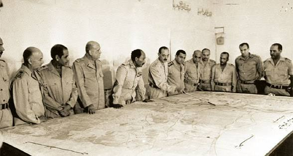
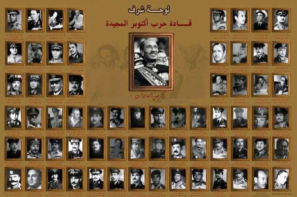
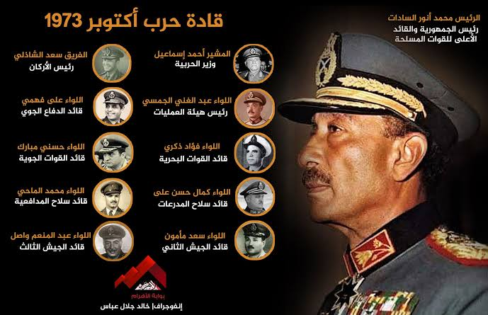

صورة 01
من ذاكرة أكتوبر
صورة أرشيفية مرتبطة بأحداث حرب أكتوبر 1973.
مجموعة من الصور التي اخترتها لتوثيق أحداث وذكريات حرب أكتوبر 1973.

صورة أرشيفية مرتبطة بأحداث حرب أكتوبر 1973.
صورة توثق جانبًا من أحداث العبور خلال حرب أكتوبر.

لقطة أرشيفية من أحداث وذكريات حرب أكتوبر 1973.
صورة من المواد التي اخترتها لتوثيق ذكرى أكتوبر.

صورة أرشيفية إضافية ضمن معرض أكتوبر 73.
لقطة أخرى من المواد البصرية الخاصة بالمشروع.